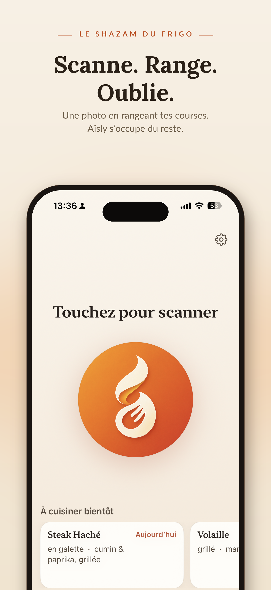
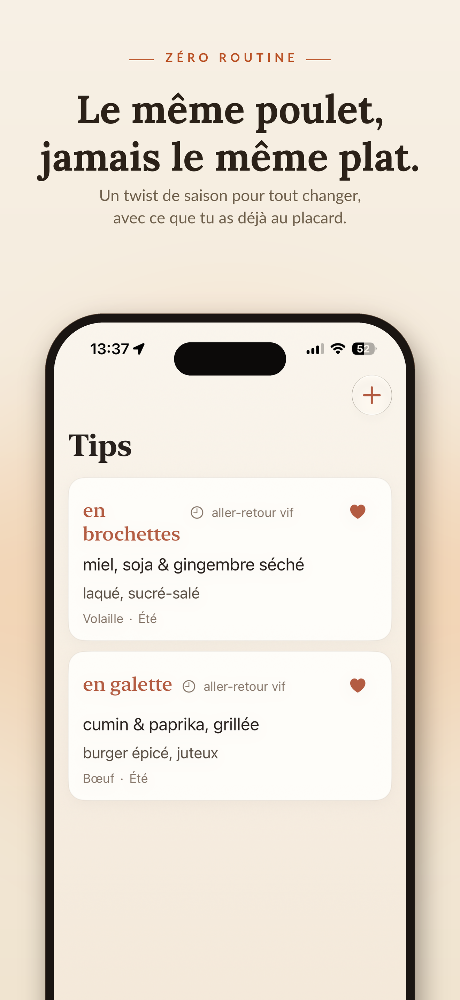
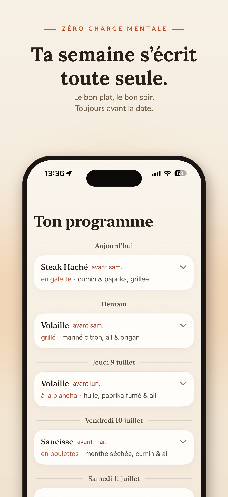

L'anti-gaspi qui inspire
Zéro gâchis,
zéro routine.
Tes protéines fraîches, cuisinées pile au bon moment — jamais deux fois pareil.
Bientôt sur l'App Store



Scanne
En rangeant les courses, photographie tes viandes, volailles et poissons. Date lue toute seule, ou estimée en un tap.
L'app dort
Aucun inventaire à tenir. Aisly ne te réveille que quand une protéine approche de sa date — jamais pour rien.
Cuisine autrement
À la place de « poulet, encore », une idée de saison, réalisable maintenant, fond de placard uniquement.
Sors d'un geste
Cuisiné, congelé ou jeté : la protéine sort de ton suivi. Tu ne gères jamais ton stock.
Aisly fonctionne sur ton iPhone. Pas de compte, pas de cloud, pas de pistage. Tes données restent chez toi.